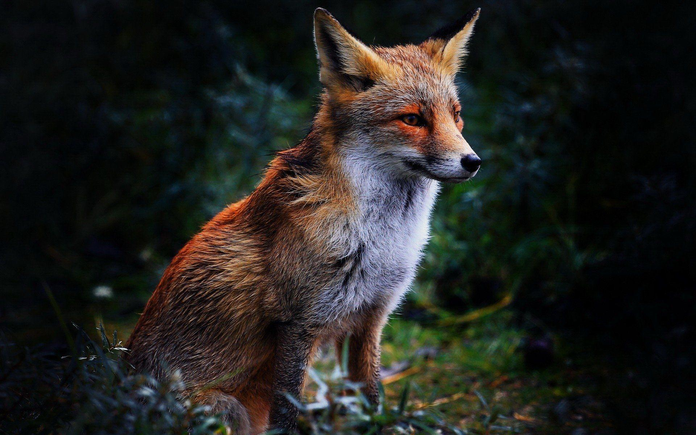
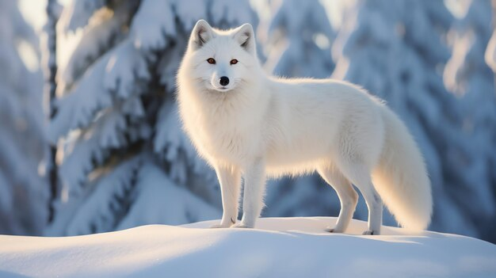
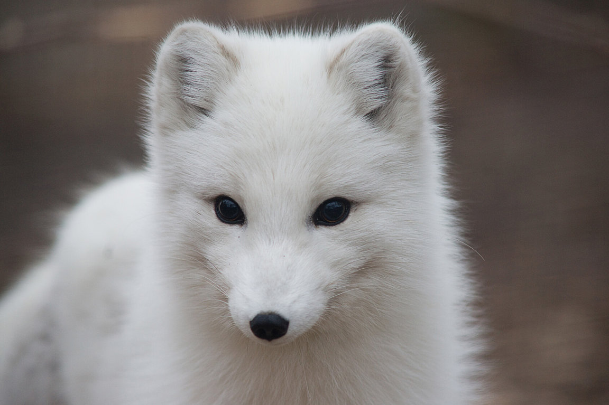

DEEPER KNOWLEDGE
Beyond the visible silhouette lies a master of adaptation. Explore the intricate biology and the vast territories of the world's most resilient predator.
FOX FACTS

A master of evasion — in short bursts, outrunning most midsize predators across any terrain.
Detects prey scurrying underground or beneath compacted snow — metres below the surface.
Each uniquely evolved for its specific ecological niche — from frozen tundra to desert edge.
Most active at twilight — dawn and dusk — when light and shadow both belong to the fox.
Adaptable omnivores surviving from the high Arctic to the edge of the Sahara Desert.
Widest Geographic Distribution
The widest natural range of any wild land mammal on Earth. Across 4 continents, 45 subspecies have adapted to every climate zone — from Arctic tundra to the North African savanna edge.
THE GLOBAL FAMILY
Three distinct paths of evolution across the continents.
Red Fox
Vulpes VulpesThe largest of the true foxes and the most geographically widespread of all members of the order Carnivora.

Arctic Fox
Vulpes LagopusBuilt for extreme cold, featuring a thick white coat that changes color with the seasons for camouflage.
Fennec Fox
Vulpes ZerdaThe smallest species of canid in the world, renowned for its unusually large ears used to dissipate heat.
THERMAL ADAPTATION
Foxes are masters of thermodynamic regulation. From the sub-zero tundra to the searing Sahara, their metabolic systems adjust to maintain core stability.
Climate Resilience
Data collected from 14 global wildlife observation stations.